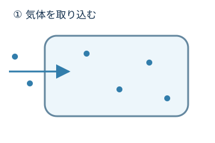
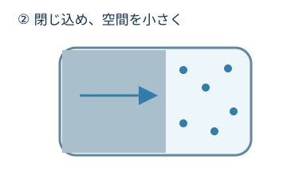
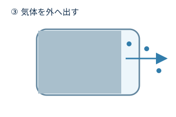

大気圧付近から下げる
ドライや油回転式ロータリーなどが粗引きを担当。
02で学んだポンプの役割分担。その理由を、気体の運び方から見てみましょう。

02でポンプを組み合わせたよね。中でやっていることも違うの？

気体を外へ送る役目は同じでも、運び方が違いそう。

その通りです。まず、気体を閉じ込めて運ぶ方法から見てみましょう。
小さな空間に気体を取り込み、その空間を小さくして出口へ押し出す。この動きを繰り返すポンプがあります。



動きだけを取り出した概念図です。実際の内部形状は方式によって異なります。
気体を通す圧縮室に、油を使わない方式です。たとえばスクリュー式では、回転するねじ形の部品の間に気体を取り込み、出口へ送ります。

気体が通るところに油を使わないから、ドライなんだ！
ドライは「気体を圧縮する部屋に油を使わない」という特徴。
ここでは粗引き・前段側に使うドライポンプを扱います。ドライポンプには複数の方式があり、装置全体が無潤滑という意味ではありません。

ここでは、油回転式のロータリーベーンポンプを紹介します。回転する羽根で気体を区切り、空間を小さくして出口へ押し出します。
油は、すき間をふさいで気体が戻りにくくする働きなどを担います。大気圧付近から圧力を下げる粗引きにも使われます。

ドライとロータリーは、どちらも気体を閉じ込めて運ぶ仲間なんだね。

気体が少なくなったところで、高速で回る羽根が気体分子にぶつかり、出口側へ運動を与えます。高真空をつくるときに使う代表的なポンプです。
出口側の圧力を十分低く保つため、ドライやロータリーなどの前段側のポンプと組み合わせます。
ターボ分子ポンプだけで、大気圧からすべてを担当するわけではない。
高真空で運転しているときの気体の経路の例です。始動時のバルブや粗引き経路は省略しています。
リレーでも、前のポンプが休むわけじゃないんだ。
はい。ターボを働かせている間も、前段側を排気して支える構成があります。
ドライや油回転式ロータリーなどが粗引きを担当。
ターボ分子ポンプなどが高真空側を担当。
得意な圧力範囲は機種・方式・気体・装置条件で異なります。ここでは数値を暗記する必要はありません。
閉じ込めて運ぶ方法と、羽根で分子を送る方法がある。
ドライ・ロータリー・ターボは同じ役割ではない。
高真空側を、前段側のポンプが支える。
次は、できた真空をどう確認するのかを見ていきましょう。
図は仕組みを理解するための概念図です。形状・粒子数・圧力範囲は実機を再現していません。